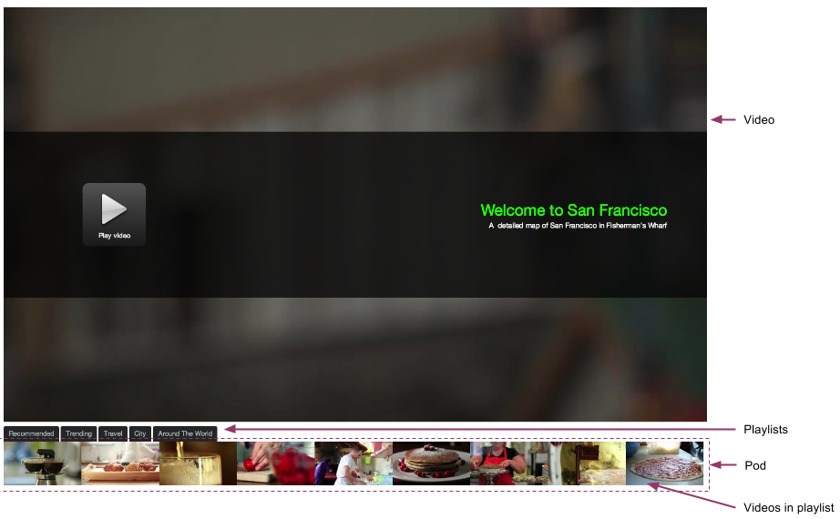

With Theme Builder, you can build asset- or label-based playlists for the Ooyala Player V4 or Player V3, use complex templates to build a custom playback experience, and create an embed that contains the playlists you construct.
While you can simply brand players in Backlot to give your viewers a custom experience, Theme Builder gives you even more control over the video-watching experience of your viewer. You can build playlists by specific video assets or by label. These playlists are then displayed in the embed in an invisible container called a pod, which you can also customize. For players, you have control over various aspects of the layout, controls, and other behaviors. You can see examples of the customizations you can make with Theme Builder in Design Choices.
You can create playlists, pods, and embeds with the Theme Builder GUI or programmatically with a combination of requests with Backlot API and Ooyala Player V3 JavaScript.
The following is an example of a Theme Builder embed.
The embed consists of the following:
After having been embedded in a web page, a Theme Builder embed proportionally resizes itself automatically to conform with the type of the viewing device, such as desktop, tablet, phone, and so on.